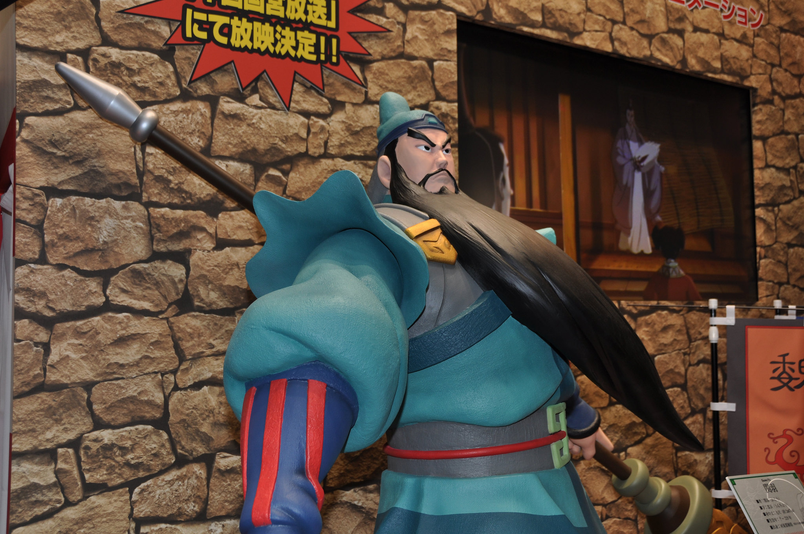

Guan Yu is a stalwart general who firmly believes in justice and virtue.

"Guan Yu(Tokyo International Anime Fair 2009)" by kanegen is licensed under CC BY 2.0
Home page
a)What is your character’s name and what do they look like?
c)What does your character’s environment?
d)Describe your character’s physical traits and personality
e)Describe it’s unusual skill and how it uses its power